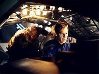
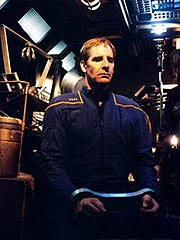
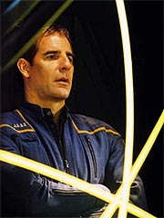

|
MANCHETE
DO EPISDIO
Primeira
apario dos Telaritas se
perde em mais um enredo manjado
Episdio
anterior | Prximo
episdio
Sinopse:
Archer e Trip esto retornando de uma misso avanada em um planeta quando a Enterprise contatada por uma nave aliengena. Segundo os bancos de dados Vulcanos, o design Telarita. Ao abrir frequncias de comunicao, um Telarita chamado Skalaar inicia uma conversao, em princpio agressiva, com Archer, mas logo se mostra simptico e se oferece como um guia para os tripulantes em licena.
Quando Skalaar vem a bordo, ele surpreende Archer e Trip e tonteia os dois com uma pistola, em seguida sequestrando o capito. Fazendo uma sada rpida, ele foge da Enterprise e danifica seus motores de dobra. Ainda h duas equipes de explorao na superfcie. Malcolm Reed ordena seu retorno imediato.
Numa delas esto T'Pol e Phlox. Segundo o mdico, ambos foram contaminados por um patgeno e precisaro ficar na cmara de descontaminao. A contragosto, a Vulcana concorda.
A Enterprise parte ento procura da nave de Skalaar, mas tudo que consegue encontrar um sinalizador que simula a assinatura do veculo aliengena nos sensores -- foram enganados.
 Na nave Telarita, Archer descobre por que est atrs das grades: o aliengena pretende entreg-lo aos Klingons, que colocaram uma grande recompensa (9.000 darsecs) a quem capturasse o capito, por conta de sua fuga da colnia penal Rura Penthe.
O humano tenta convencer o Telarita a no entreg-lo, mas sem sucesso. Skalaar pretende usar o dinheiro para reaver sua nave cargueira, a Tezra. Ele perdeu o veculo ao tentar cortar caminho para uma entrega em territrio Klingon. Alm de ter ficado sem a nave, acabou brigando com seu irmo, Gaavrin.
Tudo corre bem com seus planos at sua pequena nave ser interceptada por Kago-Darr, outro caador de recompensa. Ele ordena que Skalaar entregue Archer. Com a recusa, uma batalha espacial se inicia. Vendo que Skalaar no conseguiria dar conta dos reparos e do combate ao mesmo tempo, Archer se oferece para pilotar. Relutantemente, o Telarita obrigado a aceitar.
Archer leva a nave at um planeta e usa a atmosfera, mais dois daqueles "simuladores" da assinatura da nave de Skalaar, para se livrar de Kago-Darr. No fim das contas, por problemas com o motor, ambas as naves so obrigadas a realizar um pouso forado, embora bastante separadas uma da outra.
Enquanto isso, na Enterprise, T'Pol comea a ter dificuldades para controlar suas emoes. Ao que tudo indica, o patgeno causou uma entrada prematura em seu pon farr, o tempo de acasalar dos Vulcanos. Ela tenta de todas as formas seduzir Phlox, mas o mdico no colabora. Em vez disso, tenta desenvolver um tratamento mais ortodoxo para o problema. Quando todas as tentativas falham, T'Pol nocauteia o mdico e foge da enfermaria. Felizmente ela contida por Reed e uma equipe de segurana e levada de volta.
Archer continua tentando convencer Skalaar a libert-lo, mas sem sucesso. Aps tentar sabotar os reparos nave, ele detido e o Telarita consegue voltar ao espao. Ele parte para uma estao de manuteno em que agora trabalha seu irmo e pede a ele um favor: um injetor de antimatria. Gaavrin cede, com a condio de que Skalaar nunca mais aparea l, e diz que o sonho de recuperar a Tezra perda de tempo -- ela j foi canibalizada pelos Klingons tempos atrs e hoje o que sobrou dela no passa de lixo.
 Desanimado, Skalaar parte, ainda mais incomodado por ter de entregar Archer aos Klingons, mesmo sem ter a esperana de recuperar sua velha nave. O capito ento prope um plano.
Skalaar de fato o entrega aos Klingons, como originalmente planejado, e recebe por isso 6.000 darsecs. Mas o que os Klingons no sabem que Archer est equipado com um mecanismo para soltar suas algemas e conhece bem onde est o casulo de escape mais prximo. Ele consegue deixar a nave e logo recuperado pela Enterprise, que foi informada por Skalaar de onde Archer estaria. Rapidamente o casulo com o capito recolhido e a NX-01 danifica a nave Klingon o suficiente para uma fuga rpida.
T'Pol finalmente "curada" da infeco e volta ao normal, pedindo a Phlox que por favor no revele o que ela fez durante sua "crise". Mais tarde, via tela, Archer e Skalaar tm uma ltima conversa, e o Telarita alerta o capito para que tenha cuidado: os Klingons devem dobrar a recompensa da prxima vez. E ele no promete que no vir atrs dela quando isso acontecer.
Comentrios:
"Bounty" tinha vrias potenciais atraes: a volta dos Telaritas, aps rpidas aparies na
Srie Clssica, h mais de 30 anos; o uso de um gancho criado em
"Judgment", com o aumento das hostilidades entre Archer e os Klingons; e a potencial introduo ao tema do ltimo episdio da temporada. Diante de tantas oportunidades, incrvel que o segmento tenha conseguido to pouco sucesso.
Vamos comear pelos Telaritas. A maquiagem, embora competente como de costume, no faz o suficiente para nos lembrar dos velhos "caras-de-porco" da srie original. Embora eu reconhea o talento do designer de maquiagem Michael Westmore (que sempre declarou sua vontade de "atualizar" os Telaritas) e a dificuldade da tarefa mo, acho que o trabalho poderia ter sado melhor.
A mesma coisa se diz das caracterizaes dos aliengenas. Embora os originais fossem caricatos demais para um drama srio, o desafio seria manter aquelas personalidades, em dilogos que fizessem sentido. Em vez disso, o roteiro procurou amenizar o aspecto cartum dos Telaritas, tornando-os mais, bem, comuns. No h de fato algo que marque esses aliengenas, como h a violncia e a crueldade nos Klingons, ou a desconfiana dos Andorianos.
Alis, os Andorianos so uma boa medida de comparao. Tambm esquecidos desde a
Srie Clssica e resgatados por Enterprise, eles estabeleceram um padro que dificilmente seria atingido novamente. Entre os novos Telaritas e os novos Andorianos, fico com Shran e seus asseclas todas as vezes.
Sobre o gancho deixado por "Judgment", ele at foi bem utilizado, mas numa histria que j vimos um sem-nmero de vezes. Archer sequestrado. Duh! Archer conquista a confiana de seu captor. Duh! Seu captor no to ruim quanto parecia a princpio. Duh! Os Klingons no cumprem sua palavra. Duh! Archer contraria todas as probabilidades e consegue fugir. Duh!
Menos ainda se pode dizer do episdio como introduo ao finale: embora os Klingons estejam envolvidos em ambos, nos dois casos em tentativas de capturar Archer, no h uma trama que realmente comece neste episdio e se resolva no seguinte. Mais uma perda de oportunidade no estabelecimento de uma linha de histria contnua para a srie.
Para terminar o desperdcio, uma subtrama totalmente injustificada e apelativa ligada ao pon farr prematuro de T'Pol. Desnecessrio e, alm de tudo, sem nenhum propsito ligado trama, exceto por expor Jolene Blalock situao de "mulher-objeto" da srie. Dessa vez nem mesmo John Billingsley conseguiu se salvar...
Mais uma vez, a exemplo do que aconteceu em "First
Flight", o episdio majoritariamente direcionado a Archer. E mais uma vez a atuao de Scott Bakula foi bem morna -- a sorte neste caso foi a ausncia de uma presena marcante como Keith Carradine, que no segmento anterior fez A.G. Robinson.
 Jordan Lund faz um papel decente com Skalaar, mas apenas to bom quanto suas falas permitem. Boa parte da "edge" dos Telaritas acabou perdida, e com ela tambm se foram as oportunidades de destaque para Lund. Mais sumido que ele, s Robert O'Reilly, que fez o caador de recompensas/figurante Kago-Darr.
O suposto drama entre Skalaar e Gaavrin poderia ter sido interessante, mas no teve sucesso na forma em que foi apresentado -- embora fique evidente pelo episdio que a inteno fosse dar maior tridimensionalidade a essa relao em particular. No deu certo.
Alis, acho que a melhor definio para "Bounty" essa: um bom episdio que no deu certo. Tinha tudo para se tornar um dos clssicos para os fs, e acabou saindo mais um episdio mediano de
Enterprise, que nada fez para criar expectativa sobre o to badalado
"The Expanse", que fecha o segundo ano da srie.
Citaes:
T'Pol - "You have no idea what youre denying yourself..."
("Voc no tem idia do que est negando a si mesmo...")
T'Pol - "Im hungry."
("Estou faminta.")
Phlox - "Our meals will be here soon."
("Nossas refeies estaro aqui em breve.")
T'Pol - "I wasnt referring to the food..."
("Eu no estava me referindo comida...")
Trivia:
 A produo de "Bounty" foi de 19 a 27 de maro de 2003. O ncleo das filmagens ocorreu no interior da pequena nave Telarita de Skalaar, onde os atores Jordan Lund e Scott Bakula trabalharam por trs dias e meio. Outras cenas foram filmadas na ponte, numa nave Klingon e na cmara de descontaminao.
A produo de "Bounty" foi de 19 a 27 de maro de 2003. O ncleo das filmagens ocorreu no interior da pequena nave Telarita de Skalaar, onde os atores Jordan Lund e Scott Bakula trabalharam por trs dias e meio. Outras cenas foram filmadas na ponte, numa nave Klingon e na cmara de descontaminao.
Robert O'Reilly conhecido dos fs por seu papel como o chanceler Gowron, em
A Nova Gerao e Deep Space Nine.
Para Mike Sussman, os Telaritas esto de volta: "Michael Westmore fez um trabalho fantstico atualizando a aparncia Telarita, como ele havia feito com os Andorianos. Eu particularmente gosto de como a nova maquiagem consegue evocar aqueles soquetes de olhos profundos do design original."
Jordan Lund tambm gostou da misso. "Nos divertimos muito revisitando essa raa, e espero que tenhamos sido capazes de capturar o esprito do original, com uns poucos toques atualizados."
Ficha
tcnica:
Histria de Rick Berman &
Brannon Braga
Roteiro de Hans Tobeason e Mike Sussman & Phyllis Strong
Direo de Roxann Dawson
Exibido em 14/05/2003
Produo:
051
Elenco:
Scott
Bakula como Jonathan Archer
Jolene Blalock como
T'Pol
John Billingsley
como Phlox
Anthony Montgomery
como Travis Mayweather
Connor Trinneer como
Charlie 'Trip' Tucker III
Dominic Keating como
Malcolm Reed
Linda Park como Hoshi Sato
Elenco convidado:
Jordan Lund como Skalaar
Michael Garvey como capito Goroth
Ed O'Ross como Gaavrin
Robert O'Reilly como Kago-Darr
Louis Ortiz como guerreiro Klingon
Episdio
anterior | Prximo
episdio
|